Part B · Concepts
How Lite Classify works
Lite Classify reads a drone image the way a person does. It splits the scene into objects, describes each object with up to 24 measurements and a learned description of its appearance, proposes groups of look-alike objects for you to name, and learns from your examples which descriptions belong to which class.
5.1Objects, not pixels
Object-based image analysis classifies groups of similar neighbouring pixels instead of single pixels. A group carries far more evidence than a pixel: its average colour, how varied it is inside, its texture, its shape, its height and how it compares with its neighbours. It also removes the scattered single-pixel speckle that pixel-by-pixel maps suffer from.
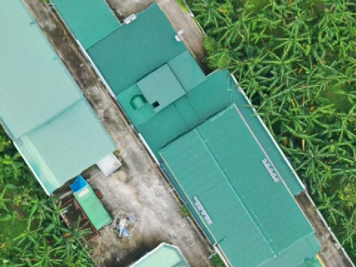
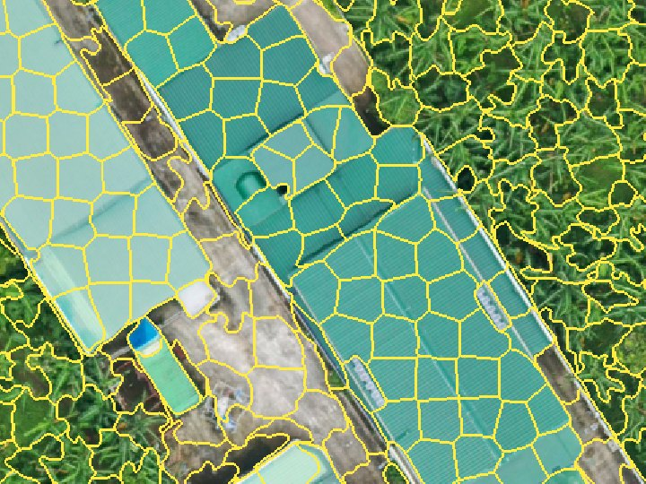
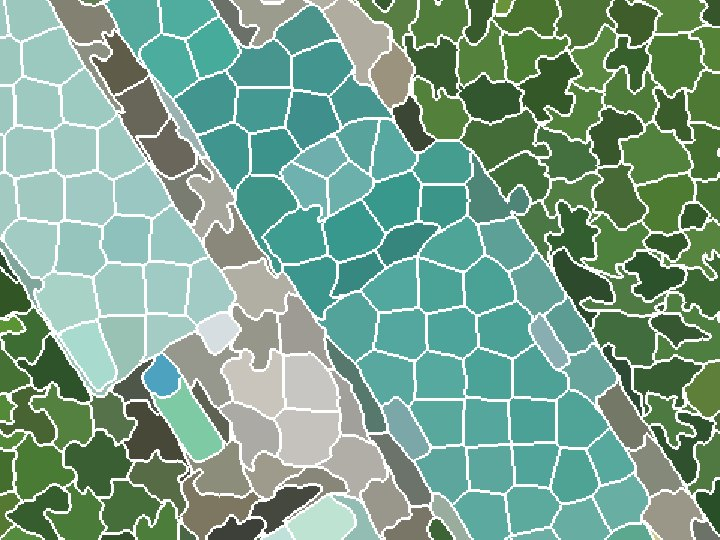
At drone resolution a tree crown or roof spans hundreds of pixels, so objects match real things on the ground. Resolution can also be too fine. Below roughly 1–5 cm per pixel the segmenter starts outlining individual leaves and roof sheets, and objects stop meaning anything. About 5–10 cm per pixel suits crown- and gap-scale work. The worked example is captured at 3.3 cm and segmented at 10 cm.
RGB only. Consumer drone cameras record red, green and blue, with no near-infrared. That rules out NDVI, so Lite Classify leans on visible-light vegetation indices, texture, height and learned appearance instead.
5.2Segmentation with SLIC
SLIC (Simple Linear Iterative Clustering) is k-means clustering on five numbers per pixel: three colour values in CIELAB space (L*, a*, b*) and the pixel's x and y. Seeds start on a regular grid. Each pixel then joins the nearest seed, where "near" mixes colour and distance:
D = √( dcolour² + (dspace / S)² · m² )
S is the seed spacing and m is compactness. CIELAB is used because distances in it track how different two colours look to a person. After about ten rounds of moving seeds and reassigning pixels, a clean-up pass makes every segment a single connected piece.
Number of segments: the scale of the map
This one setting decides how big objects are, and it is the most important choice in OBIA. Too many, and crowns and roofs are cut into fragments (more labelling, but edges are kept). Too few, and objects straddle two cover types, which no classifier can fix. The worked example asked for 60,000 segments over ha and got , about m² each: part of a crown, part of a roof. That is small on purpose: the stream is only a few objects wide.
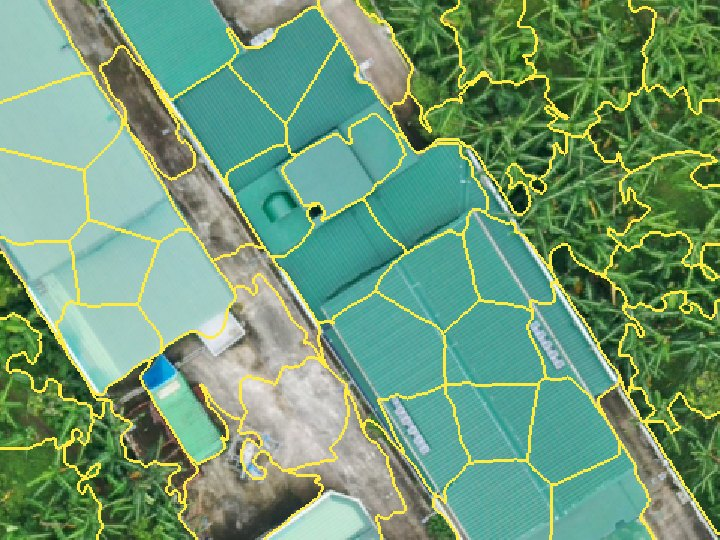
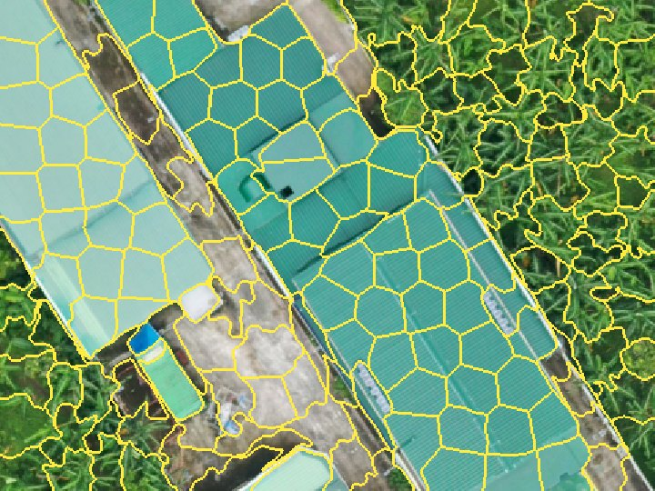
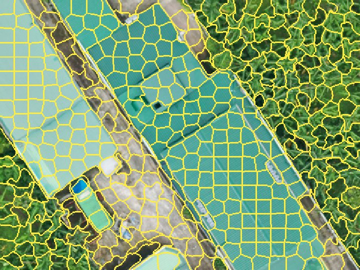
The same 48 × 36 m of roofs beside canopy, segmented on its own at each scene-wide density.
Compactness and sigma
Compactness trades colour against regularity: low values let segments follow colour edges closely; high values make them blocky and even. Sigma blurs the image slightly before clustering so that fine texture and sensor noise do not seed spurious segments.
Large images: tiles, and GPU vs CPU
When one run would not fit in memory, Lite Classify segments the image in tiles with an overlap margin. Colour is scaled over the whole scene first and every tile aims for the same segment size, so tiles match. Each overlap pixel goes to the segment whose centre owns it, and leftover slivers merge into the neighbour they share most border with, so no object is cut or duplicated at a tile seam. Images that fit keep the single-run path.
The CPU engine is scikit-image's SLIC. The GPU engine is a PyTorch version of the same clustering. They scale compactness differently, so the same value gives similar but not identical segments, and the GPU's parallel updates make it not bit-for-bit repeatable (about 98% of pixels agree between runs). Pick one engine for a project and keep it; the realised segment count, not the requested one, is what to report.
5.3The object fingerprint
Once segmented, every object is summarised by a fixed list of numbers. These numbers, not the image, are what the classifier learns from. Nineteen come from the RGB image alone; a DSM adds five more. Optionally, 20 appearance components from DINOv2 join them (5.4): the worked example's classifier used all .
All 24 features
| Group | Feature | What it measures | Helps separate |
|---|---|---|---|
| Colour | r_mean g_mean b_mean | Average of each band | Overall colour; dark shade and gaps |
r_std g_std b_std | Spread of each band inside the object | Ragged crown vs. lawn or roof | |
brightness_mean | Average of (R+G+B)/3 | Sunlit vs. shaded surfaces | |
| Vegetation index | exg_mean | Excess Green, 2g − r − b | Plants vs. soil, roads, roofs |
vari_mean | (G − R) / (G + R − B) | Green cover, damped for light | |
ngrdi_mean | (G − R) / (G + R) | Greenness, NDVI stand-in | |
| Texture (GLCM) | contrast | Grey-level difference between neighbours | Canopy vs. smooth roof |
homogeneity | Closeness of neighbouring grey levels | Uniform surfaces | |
energy | Orderliness (angular second moment) | Repetitive surfaces | |
entropy | Disorder of the texture | Complex canopy | |
| Shape | area perimeter | Size of the outline, m² and m | Object size |
circularity | 4πA / P²; 1 is a disc | Compact vs. long objects | |
convexity | Area / convex-hull area | Regular vs. ragged outlines | |
| Context | brightness_rel_neighbors | Own brightness minus touching objects' mean | Locally dark patches, gaps |
| Height (DSM) | dsm_mean dsm_std | Mean height and its spread | Tall vs. low; rough canopy |
slope_mean | Mean slope in degrees | Tilted roofs and crown sides vs. flat ground | |
dsm_rel_neighbors | Own mean height minus touching objects' mean | Raised objects (crowns, roofs) vs. sunken (gaps, roads) | |
hag_mean | Mean height above a ground surface estimated from the DSM | Tall cover vs. low cover, on any slope | |
| Appearance (optional) | deep_5m_pc1…10 deep_10m_pc1…10 | Principal components of the DINOv2 description of 5 m and 10 m patches | Canopy types of similar colour and height; stand pattern |
The three vegetation indices use chromatic coordinates, each band divided by R + G + B, so that a shaded leaf and a sunlit leaf score alike. Random Forest needs no rescaling, so features go in as measured.
Measuring finer than you segment
Coarsening the image keeps objects crown-sized, but it also throws away the fine detail texture is computed from. Lite Classify separates the two: segments are drawn on the working grid, and colour and texture are read from the original file at the finer resolution you set in Colour/texture at. In the worked example, outlines come from the 10 cm grid and every object's colour and texture from the native 3.3 cm pixels, about nine times as many pixels per object. Height features always use the DSM on the working grid.
Feature explorer
Pick a feature to see its value for every object in one 128 × 96 m patch of the worked example: a road junction with roofs and a shed (top left and left), bare tracks, natural canopy and grass in the middle, and an agroforestry stand to the right.
Colour ramps are stretched to the 2nd–98th percentile of objects in this patch. The neighbour features use a blue–red ramp centred on zero.
Texture, step by step
Texture comes from a grey-level co-occurrence matrix (GLCM). The object is turned to grey, reduced to 15 grey levels, and every pair of touching pixels is tallied by its two levels, in four directions. A smooth surface puts all its pairs on the diagonal (same level next to same level). A busy one scatters them.
A canopy object
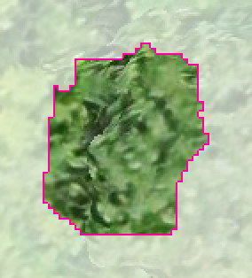
Co-occurrence: spread wide
A roof object
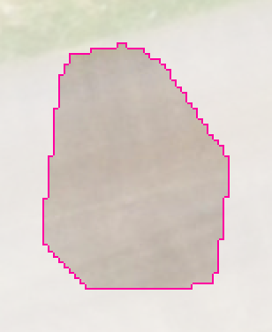
Co-occurrence: one cell
Green-painted roofs can come close to canopy in mean colour. Texture separates them at once: the canopy's contrast here is about 80 times the roof's. Objects smaller than 16 pixels get neutral texture values.
Exactly how Lite Classify computes texture
Luminance is 0.299R + 0.587G + 0.114B. Grey levels 1–15 hold the object's pixels; level 0 marks pixels outside the object and is dropped, then the matrix is renormalised so only pairs inside the object count. Pairs are one pixel apart at 0°, 45°, 90° and 135°, counted symmetrically. Contrast, homogeneity and energy are averaged over the four directions. Entropy is computed in bits and summed over the four directions, so its values run about four times a single-direction entropy; the classifier is unaffected by that scale.
Context and height
Two features compare each object with the objects it touches, using a region adjacency graph (a list of which objects share a border). An object darker and lower than everything around it is a canopy-gap candidate wherever it sits on a slope.
A DSM is the height of the top surface, not the ground, so absolute height mixes terrain with the objects on it. Height above ground removes the terrain. Lite Classify estimates a ground surface from the DSM itself: it takes the lowest value in each ~1 m block, then a morphological opening over 40 m (a moving minimum, then a moving maximum) that removes anything narrower than 40 m, such as crowns and buildings, and smooths the result. Each object's height above that surface is hag_mean. Under closed canopy wider than 40 m the ground estimate rides up on the canopy and heights are underestimated, the usual limit of ground estimation from a DSM alone.
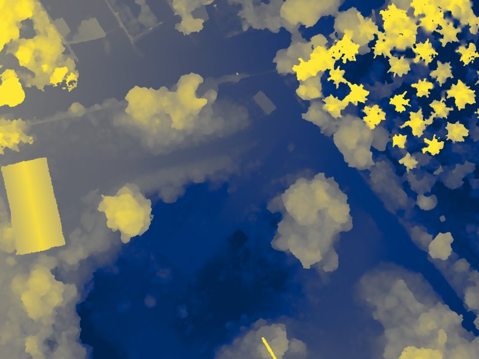
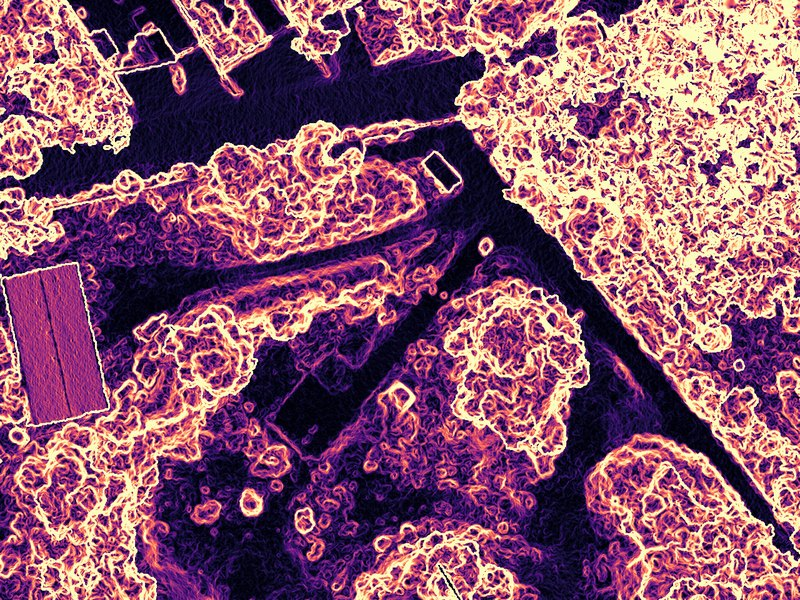
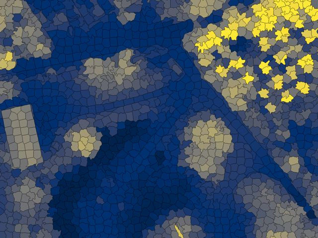
5.4Appearance with DINOv2
The 24 features describe each object on its own, and at this scale an object is about the size of part of a crown. Some cover types are defined by their surroundings and pattern instead: a planted coconut stand and natural canopy beside it are both closed, green and tall, but one has regular, evenly spaced crowns and the other does not. To capture that, Lite Classify adds a learned description of what each object and its neighbourhood look like.
DINOv2 (Meta AI, 2023) is a vision transformer trained on 142 million images without labels, by learning to give matching descriptions to different crops of the same picture. Lite Classify uses its small version, ViT-S/14, as a frozen feature extractor: it never trains it, fine-tunes it, or uses it to classify.
- Two patch sizes, on purpose. The 5 m patch describes the object and its edge; the 10 m patch describes the stand pattern around it. Both are cut from the orthomosaic on the working grid, centred on the object.
- Why a transformer and not hand-made texture. GLCM texture counts neighbouring pixel pairs inside one object. Self-attention relates every part of the patch to every other part, so it captures arrangement: rows, spacing, crown shape, how an object sits among its neighbours.
- Why it needs no labels. Because DINOv2 learned from unlabelled images, its descriptions are general: they transfer to aerial scenes it never saw, without retraining. Your labels are only needed later, by the Random Forest.
- Where it pays off. In the worked example, the pair natural canopy vs. agricultural, which covers about 79% of the map, is separated mainly by these appearance components; no colour, texture or height feature comes close (5.7).
Is it a CNN? No. A convolutional neural network (CNN) builds its picture from many layers of small sliding filters. DINOv2 ViT-S/14 is a vision transformer: its one convolution layer only cuts the patch into 14 × 14 px tiles (about 1% of its weights), and everything after that is attention. "Deep learning features" is accurate; "CNN" is not.
Cost, offline use, and limits
Computing the descriptions is a one-off cost per segmentation, roughly half a minute per 7,000 objects on a consumer GPU (slower on CPU). The 85 MB weights ship with the program, so it runs without internet. DINOv2 sees only RGB; it does not know about height, which the DSM features cover. Patches at the image edge are partly empty; Discover can leave those segments out. The weights and model code are Meta's, released under the Apache License 2.0.
5.5Discovering classes
A supervised map assumes you already know which classes the scene contains and can recognise each one. That is often where mapping goes wrong: the obvious list (trees, grass, bare, buildings) is easy to label but coarse, and the categories that matter may not be visible at a glance. Discover Classes turns this around: the machine proposes groups of look-alike objects, and you supply the names.
- Describe. Each object gets its DINOv2 appearance (32 components per patch size) and its standardised classifier features. Each block is scaled to equal total weight, so the many appearance numbers do not drown out colour, texture and height.
- Over-cluster. k-means splits the objects into more groups than you expect classes. Too fine is cheap to fix (merge two groups in one click); a group that mixes two cover types has to be split, which is harder. Segments at the image edge can be left out.
- Curate. You review each group's tiles and act on it: name it (which creates a class), merge it, split it by appearance, height or brightness, move single tiles, or ignore it.
- Hand over. The typical segments of the named groups become training samples in Tab 3. The Random Forest then generalises from them; groups never become the map directly, because one mis-grouped object would go straight into the map with nothing to correct it.


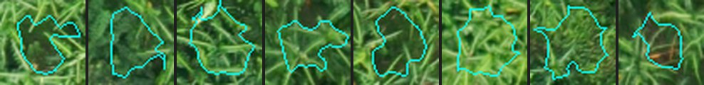
A group named Agricultural: regular coconut and banana crowns.
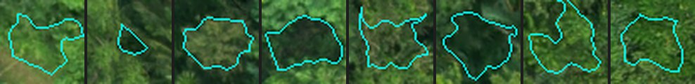
A group named Natural canopy: irregular, mixed crowns.
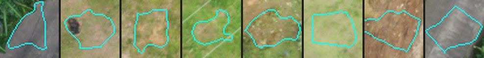
A group named Built-up: roofs, the road and concrete.
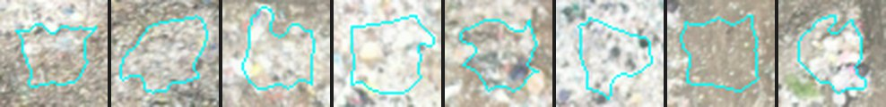
A group named Solid waste: split from a bare-ground group by appearance.
In the worked example, two of the seven classes came out of the groups rather than out of a list made in advance: Agricultural (planted coconut, banana and fruit trees, distinct from natural canopy) and Solid waste (exposed refuse, distinct from the bare soil around it).
5.6Random Forest
You label a modest number of example objects per class. Lite Classify trains a Random Forest of 100 decision trees on their feature lists and asks it to label every object in the scene.
Why this and not hand-written rules such as "brightness below 50 means gap"? Rules are clear but brittle: a change in light breaks them, and they do not scale to 44 features and seven classes. A Random Forest learns the combinations for you. Training each tree on a random resample of your examples, with a random subset of features at each split, keeps it from memorising noise. It tolerates correlated features, needs no scaling, works with a few hundred examples, and retrains in seconds. The vote shares also tell Lite Classify which objects the model is least sure about, which is how What to Label Next picks its suggestions.
5.7Class separability
Before you invest in labelling and checking, Check Class Separability reports whether your training samples can support the class list. For every pair of classes it computes the Jeffries–Matusita (JM) distance from the labelled objects: 0 means the two are identical in feature space, 2 means completely distinct (1.9 or more good, 1.7–1.9 fair, below 1.7 poor). It also ranks, for each pair, which single features separate it best, and says so in a sentence.
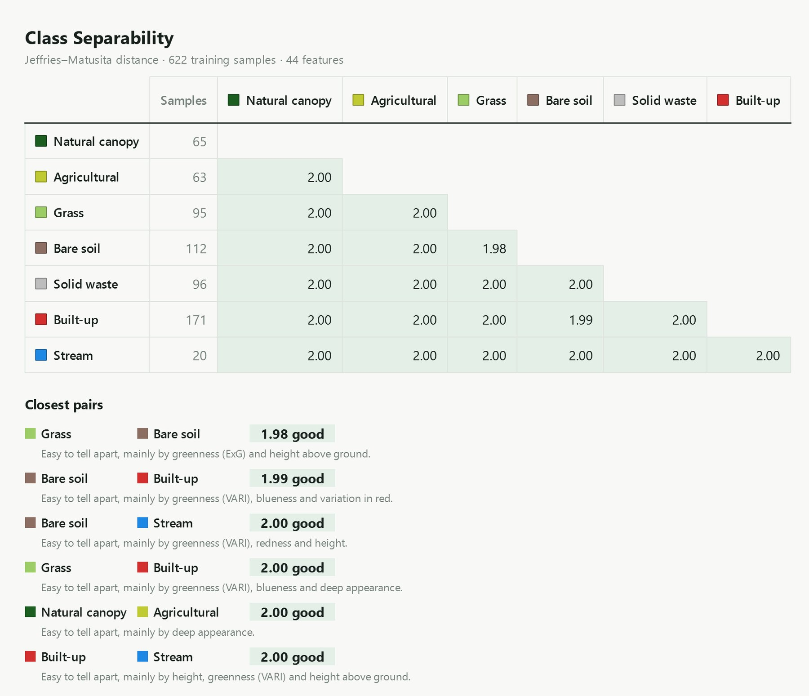
The signature plot for each pair shows the class means feature by feature, most telling on the left. Pick a pair:
Natural canopy vs. Agricultural is led entirely by appearance components; colour, texture and height features come far down the ranking. Grass vs. Bare soil is led by greenness (ExG, NGRDI, VARI) and height above ground. That split, material differences carried by the classic features and pattern differences carried by DINOv2, is the clearest single argument for the appearance features.
Read the ranking, not the number. With many features and few samples per class, the multivariate JM distance saturates near 2.00 even for pairs the classifier still confuses: natural canopy and agricultural score 2.00 yet trade 19 reference points in the matrix. The order of the closest pairs and the per-feature ranking stay informative. A class with fewer samples than features (here Stream, 20 samples against 44 features) is flagged as less reliable.
5.8Why retraining matters
The first model rarely gets every class right. It mislabels objects unlike anything in your first examples. Every classification run shows you where those errors are, and retraining fixes them: add the misclassified objects as samples under their correct class, train again, classify again.
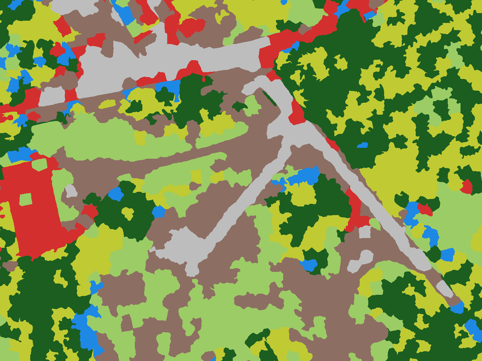

Drag across the image. A first model on five objects per class mixes up canopy, agroforestry and grass and scatters Bare soil along the roads; the final model separates them.
Simulated from the worked example · not a recorded history
The workspace keeps only its final training set, not the order it was built in. To show how accuracy grows round by round, we replayed the retraining loop from those real labels. Round 1 trains on randomly chosen objects per class. Each later round adds up to objects per class that the current model gets wrong, drawn from the workspace's own labelled objects, which is what you do after inspecting a run. Every round is scored as area-weighted overall accuracy on the stratified reference points. The replay was repeated from random starts.
Overall accuracy by retraining round
Mean of replays (line) and their range (bars). Area-weighted, on the stratified reference sample.
Show as table
| Round | Training objects (mean) | Overall accuracy (mean) | Range |
|---|
The first rounds matter most. Accuracy climbs from on 35 objects to by round 3, then levels off near . Later rounds still add samples, but each fixes less.
Targeted samples beat sheer numbers. The replays come within about a point of the full -object model () with only about objects, chosen because the model got them wrong.
Start-up luck fades. In round 1 the replays range from to , depending on which five objects per class happened to be picked. By the last rounds they sit within a few points of each other.
Producer's accuracy per class, first model and final model
Area-weighted share of each class's reference area the map finds. Round 1 is the mean of the replays.
Natural canopy and Built-up gain the most: five objects cannot cover every crown type, or roofs, roads and concrete at once. Stream goes the other way: with only 20 labelled objects and a channel a few objects wide, its score swings with each sample, and it ends as the least complete class. More samples cannot fix a feature narrower than the segments; a finer working grid can.
The rule that follows: after each run, do not just fix the most visible blotch. Pan the whole scene, list the kinds of mistakes, and add a few samples of each kind from several places. Then measure with the Accuracy tab rather than by eye.
5.9Generalisation
Even a good map has isolated objects labelled differently from everything around them. The sieve removes connected patches of one class smaller than a pixel threshold and hands them to the surrounding class. This sets a minimum mapping unit without blurring real boundaries, because it only ever moves whole small patches.
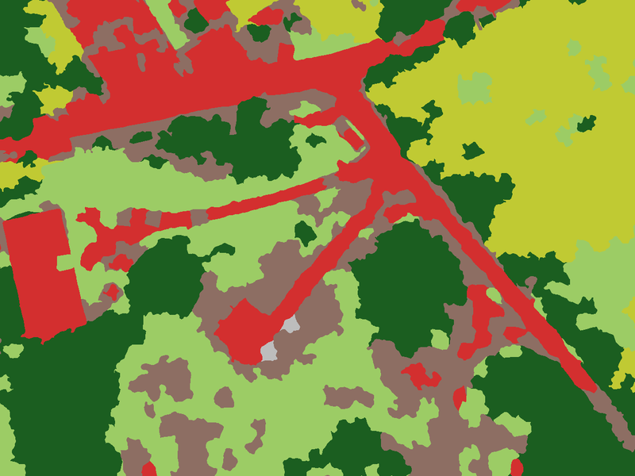
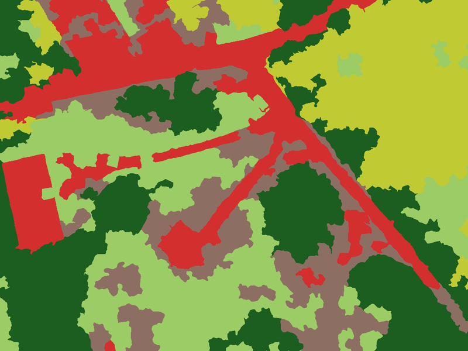
| Sieve (px) | Area at 10 cm (m²) | Map pixels changed | Overall accuracy (area-weighted) |
|---|
Objects in the worked example average about m² ( pixels), so even a 2,000 px sieve changes under 3% of the map and moves accuracy by less than a point either way. The example was assessed with no sieve. Set the sieve for how the map will be used, not to raise the score; a sieve tuned against the reference points is no longer an independent check.
5.10Accuracy assessment
A map is only as useful as your knowledge of how wrong it is. Lite Classify follows standard practice for thematic maps (Congalton and Green; Olofsson et al. 2014):
- A probability sample. Points are placed at random, by a design you choose, so every part of the map has a known chance of being checked. Training objects are kept out.
- Blind labelling. You label each point on the raw image, with the classification hidden, so the model's answer cannot sway you.
- An error matrix. Rows are what the map says; columns are what the reference says. The diagonal holds agreements.
| Measure | Question it answers | From the matrix |
|---|---|---|
| Overall accuracy | What share of the map is right? | Diagonal total ÷ all |
| User's accuracy | If the map says Grass, how often is it really Grass? (reliability for a map user; 1 − commission error) | Diagonal ÷ row total |
| Producer's accuracy | Of the real Grass, how much did the map find? (completeness; 1 − omission error) | Diagonal ÷ column total |
Kappa is left out on purpose; current guidance favours these three measures.
Simple random or stratified?
| Design | How points are placed | Good for | Watch out |
|---|---|---|---|
| Simple random | Anywhere on the image, independent of the map | A map-wide figure straight from the counts | Rare classes get too few points for a usable per-class score |
| Stratified by map class | A minimum number of points in each map class (the strata), the rest by area share | Usable per-class figures for small classes | Counts over-weight small classes; use the area-weighted estimates |
Under a stratified design, small classes are sampled at much higher rates than large ones, so a share of points is not a share of the map. Lite Classify therefore also weights each stratum by its mapped area and reports area-weighted overall, user's and producer's accuracy, the estimated area of each class, and 95% confidence intervals (Olofsson et al. 2014). The strata are the map classes at the time the points were drawn; if you later merge or rename classes, the estimates still use the original strata (Stehman 2014). That is what happened in the worked example: points were drawn on a nine-class map (broadleaf trees, coconut, banana, brush and the rest) and assessed after merging to seven.
The worked example's points give from raw counts and ± area-weighted. The gap is the extra weight the design put on the small, difficult classes. The full matrix is in Part C, 11.5.
Reference data is not ground truth. Points you label by eye from the orthomosaic are high-confidence reference data. Only points checked on the ground are ground truth. Where interpretation is hard, as for planted versus natural crowns, the interpreter's errors resemble the model's. Lite Classify's report records the source of every point and says so in its footnote.